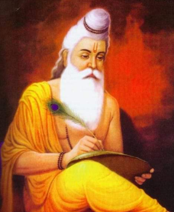

בשנת 1996 הועברו ההנחיות לתלמידי הבריגהו יוגה ע"י מורינו האהוב,
שרי שיוו שנקאר טריפאטי (שיבוג’י).
הוריו של שיבוג’י היו חניכיה של שרימאטי שאנקארי מאי אשר חונכה ואומנה ע"י שרי טאילאנג סוואמי.
תוספות ד"ר אודי בילו בית הספר הצליל הפנימי .
יוגי עצום ומהיחידים שמאורעות חייהם, מאומתים מבחינה היסטורית.
יוגי זה, היה התגלמות של פשטות וריסון.
הוא היה מלא אהבה ורוחניותו הייתה משולבת ברגש עז.
נודע ברוחב ליבו ובנדיבותו, בחשיבתו המתקדמת והליברלית, ובמעשי הצדקה הרבים שלו.
נטל תחת חסותו תלמידים מכל הכיתות והאמונות.
בשילוב נדיבות וגאוניות האופייניים למורה, לימד אותם הסוואמי אהבת אלוהים ושירות לזולת מה הם.
נולד בשנת 1607 ונכנס לסמאדהי בירח מלא בחודש דצמבר בשנת 1887.
מתוך 280 שנות חייו הוא חי 150 שנה בואראנסי.
(מתוך הספר ביוגרפיה ופילוסופיה, תרגום מאנגלית: רחל תורן).